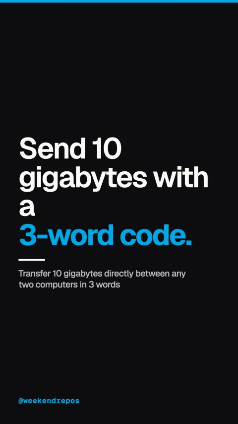

croc
Transfer 10 gigabytes directly between any two computers in 3 words

Send 10 gigabytes with a 3-word code.
Direct encrypted peer-to-peer transfer without cloud drives.
First, stop uploading multi-gigabyte database dumps to web drives. Croc establishes a direct encrypted pipeline between two machines without port forwarding.
Direct peer-to-peer · zero cloud intermediary
Send and receive files with a simple secure code phrase.
Second, run croc send to get a short three-word phrase. Enter that phrase on the receiving computer, and the transfer starts immediately.
Password-Authenticated Key Exchange (PAKE)
PAKE authentication and local LAN acceleration.
Third, it uses Password-Authenticated Key Exchange so even relays cannot read your data, and automatically routes over local Wi-Fi when possible.
PAKE encryption · local LAN auto-detection
Single Go binary with 27,000 GitHub stars.
It is written in Go, works across Linux, Mac, and Windows, and has over twenty-seven thousand stars on GitHub.
github.com/schollz/croc · MIT License